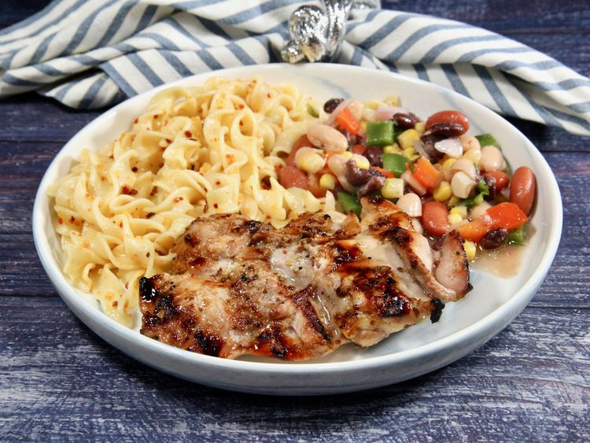

Home
Unbelievable Chicken

Description
Unbelievable Chicken lives up its name juicy, flavorful, and busrsting
with tangy zest in every bite. The chicken is marinated in a perfect
blend of savory spices, soy sauce, and zesty citrus, giving it a
mouthwatering balance of sweet and savory. Whether grilled, baked, or
pan-seared, it turns out tender on the inside with a beautifully
caramelized outside.
This dish is a crowd-pleaser for weeknight dinners and backyard barbecues
alike. Pair it with rice, roasted vegatables, or a crisp green salad, and
you'll have a meal that's quick, wholesoome, and guaranteed to leave everyone
asking for seconds.
Ingredients
These are the ingredients you'll need to make this ubelievable chicken.
- 1/4 cup cider vineger
- 3 tablespoons prepared coarse-ground mustard or to taste
- 3 cloves garlic, peeled and minced
- 1 lime, juiced
- 1/2 lemon, juiced
- 1/2 cup brown sugar or to taste
- 1 1/2 teaspoons salt or to taste
- ground black pepper to taste
- 6 tablespoons olive oil
- 6 skinless, boneless chicken breast halves
Steps
-
Mix cider vinegar, mustard, garlic, lime juice, lemon juice, brown sugar, salt, and
pepper together in alrge glass or cermic bowl. Whick in olive oil. Add chickenand
and toss evenly to coat. Cover, and marinate in the refrigerator for 8 hours to
overnight.
- Preheat an outdoor grill for high heat.
-
Lightly oil the grill grate. Place chicken on the preheated grill, and cook 6 to 8
minutes per side, until juices run clear. Discard any remaining marinade.